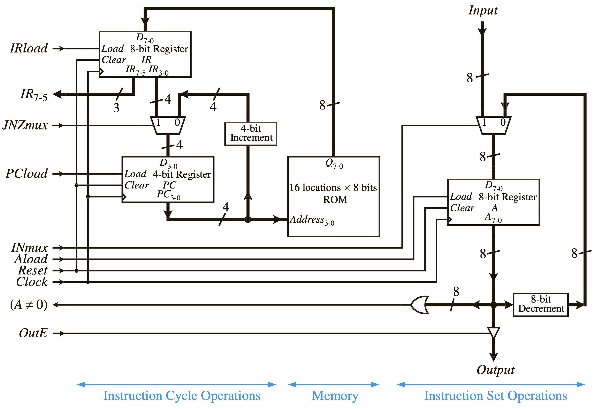
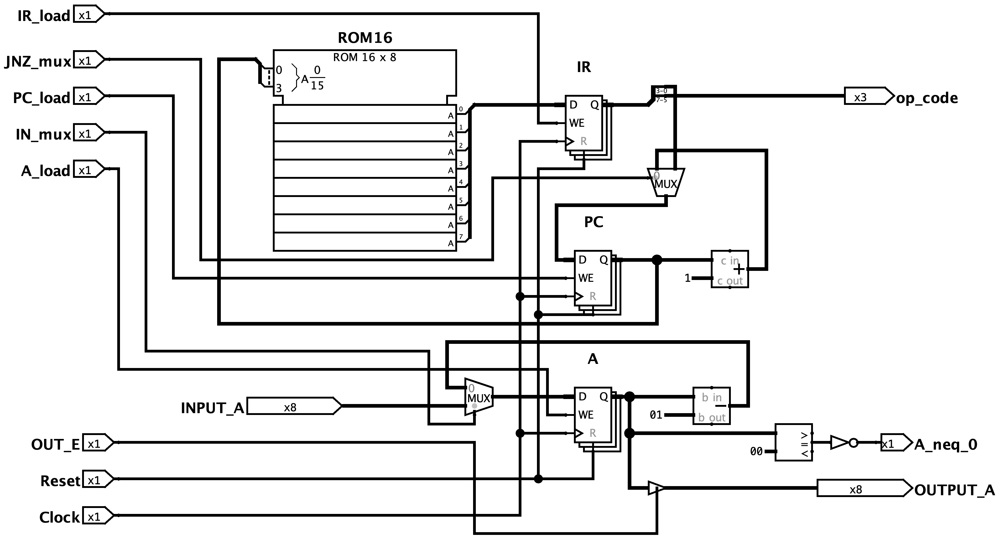
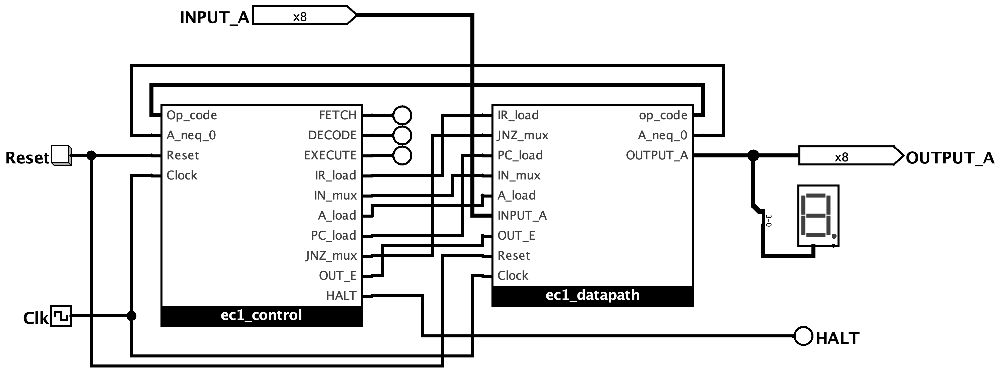

(Lab 2 : The EC-1 Microprocessor)
ด้วยโปรแกรม Logisim-Evolution
การศึกษาโครงสร้างสถาปัตยกรรมของส่วนประมวลผลข้อมูล (Datapath) และหน่วยควบคุม (Control Unit) แบบ Hardwired FSM ที่พัฒนาด้วยวงจร Logic เชิงผสมร่วมกับ D Flip-Flop
| 1 | นายดรัณภพ พิทักษ์กิจไพศาล | 6710301007 |
| 2 | นายอภิสักก์ คงภักดี | 6710301009 |
| 3 | นายธนัท จงธีรธนโชติ | 6710301032 |
รายงานฉบับนี้จัดทำขึ้นเพื่อนำเสนอผลการศึกษาและปฏิบัติงานในการทดลองที่ 2 หัวข้อ Microprocessor EC-1 (The EC-1 Microprocessor) ในรายวิชา Embedded System Design (010153521) โดยมีวัตถุประสงค์หลักเพื่อให้นักศึกษาเข้าใจสถาปัตยกรรมคอมพิวเตอร์อย่างลึกซึ้ง ผ่านการสร้าง Hardware และควบคุมทิศทางข้อมูลของ Microprocessor จำลองขนาดเล็ก
Microprocessor EC-1 เป็นสถาปัตยกรรมขนาด 8 Bit ที่มีโครงสร้างเรียบง่ายแต่ครบถ้วนตามหลักการของ Von Neumann Architecture ซึ่งประกอบด้วยหน่วยควบคุม (Control Unit) แบบใช้ LogicHardware (Hardwired FSM) และส่วนประมวลผลข้อมูล (Datapath) ที่เชื่อมต่อกันอย่างเป็นระบบ การสร้างระบบดังกล่าวบน Software Logisim-Evolution จะช่วยให้นักศึกษาสามารถเชื่อมโยงความรู้เชิงทฤษฎีในเรื่องของสัญญาณนาฬิกา (Clock Cycle), Register (Register), และหน่วยความจำ (ROM) เข้ากับการทำโปรแกรมระดับต่ำ (Assembly Language) ได้อย่างเป็นรูปธรรม
คณะผู้จัดทำหวังเป็นอย่างยิ่งว่ารายงานฉบับนี้จะเป็นแนวทางและประโยชน์สำหรับผู้ที่กำลังศึกษาเกี่ยวกับการออกแบบสถาปัตยกรรมคอมพิวเตอร์และระบบสมองกลฝังตัว ขอขอบพระคุณอาจารย์คทาเทพ สวัสดิพิศาล ที่ได้กรุณาให้ความรู้ คำปรึกษา และการชี้แนะข้อบกพร่องต่าง ๆ ในการทดลองนี้จนเสร็จสมบูรณ์
คณะผู้จัดทำ
ในการออกแบบ Microprocessor สถาปัตยกรรมของหน่วยควบคุม (Control Unit: CU) มีความสำคัญสูงสุดในการบริหารจัดการและจัดลำดับสัญญาณในการประมวลผลคำสั่งต่าง ๆ โดยโครงสร้างการออกแบบดั้งเดิมสามารถจำแนกออกได้เป็นสองวิธีหลักคือ Hardwired Control Unit และ Microprogrammed Control Unit ซึ่งทั้งสองระบบนี้ได้รับการออกแบบเพื่อแก้ปัญหาระบบคำสั่งที่มีความแตกต่างกันอย่างมีนัยสำคัญ
ระบบ Hardwired Control Unit จะอาศัยวงจร Logic เชิงผสม (Combinational Logic Gate) และหน่วยความจำสถานะ (Flip-Flop) ในการออกแบบเป็น Finite State Machine (FSM) เพื่อขับสัญญาณควบคุมออกมาโดยตรง จุดเด่นของระบบนี้คือความเร็วในการประมวลผลสูงสุดและการสิ้นเปลืองพื้นที่ Hardware ต่ำมาก เนื่องจากไม่มีความจำเป็นต้องดึงรหัสสัญญาณจากหน่วยความจำย่อย แต่มีข้อจำกัดที่ใหญ่ที่สุดคือไม่มีความยืดหยุ่น หากมีคำสั่งใหม่เพิ่มเข้ามาหรือต้องการแก้ไขพฤติกรรม จะต้องทำการออกแบบตัวแปรสัญญาณในรูปสมการ Boolean (Boolean Equations) และจัดวาง Gate ใหม่ทั้งหมดในระดับโครงสร้าง Hardware
ในทางกลับกัน ระบบ Microprogrammed Control Unit (ซึ่งได้ทดลองใน Lab 1) จะแก้ปัญหาความยืดหยุ่นนี้โดยการเปลี่ยนสัญญาณควบคุมต่าง ๆ ให้เป็นรหัสข้อมูล (Microprogram) และนำไปเก็บไว้ใน ROM (เรียกว่า Control Store) การทำงานย่อยในแต่ละจังหวะสัญญาณนาฬิกาจะอาศัยการอ่านรหัสสัญญาณคำสั่ง (Microinstruction) จาก Control Store ออกมาใช้งานโดยตรง วิธีนี้มีความยืดหยุ่นสูงมากเนื่องจากสามารถแก้ไขโครงสร้างชุดคำสั่งหรือปรับพฤติกรรมการควบคุม Hardware ได้ง่ายเพียงเปลี่ยนข้อมูลใน ROM โดยไม่ต้องดัดแปลงการต่อสาย Logic Gate แต่ระบบจะช้ากว่าเนื่องจากต้องใช้รอบการอ่านหน่วยความจำ (Memory Access Time) เสมอ
ในการทดลองนี้ จะศึกษาการออกแบบและสร้าง Microprocessor จำลองขนาดเล็กชื่อ EC-1 (The EC-1 Microprocessor) ซึ่งเป็นสถาปัตยกรรมแบบย่อส่วน (Minimal CPU Architecture) ขนาดข้อมูล 8 Bit และ Address หน่วยความจำ 4 Bit ที่ขับเคลื่อนสัญญาณด้วยตัวควบคุมประเภท Hardwired FSM ที่พัฒนาด้วย Combinational Logic Gates ร่วมกับ D Flip-Flop
ชิ้นส่วน Hardware และ Module ทั้งหมดที่ใช้สร้าง Microprocessor EC-1 ได้วิเคราะห์จากไฟล์วงจรหลัก สรุปได้ดังตารางที่ 1
| อุปกรณ์ | Module / พิกัด | การตั้งค่า | หน้าที่การทำงาน |
|---|---|---|---|
| Register PC | ec1_datapath (190,260) | 4 Bit | หน่วยนับคำสั่งชี้ Address หน่วยความจำ ROM |
| Register IR | ec1_datapath (370,180) | 8 Bit | ล็อกข้อมูลคำสั่งจาก ROM เพื่อจ่ายสัญญาณถอดรหัส |
| Register A | ec1_datapath (680,180) | 8 Bit | Accumulator พักและสะสมผลลัพธ์การประมวลผล |
| Program ROM | ec1_datapath (270,180) | 16 × 8 Bit | หน่วยความจำโปรแกรมเก็บรหัสเครื่อง 8 Bit |
| Subtractor | ec1_datapath (830,190) | 8 Bit | ตัวลบค่าสะสมด้วยค่าคงที่ 1 (A ← A - 1) |
| Zero Comparator | ec1_datapath (760,250) | 8 Bit | วงจรตรวจสอบเงื่อนไขหาค่าศูนย์ (A ≠ 0) |
| Tri-state Buffer | ec1_datapath (690,120) | 8 Bit | Buffer คุมช่อง Output ภายนอก OUTPUT_A |
| Multiplexer (IN_mux) | ec1_datapath (600,180) | 2 → 1, 8 Bit | เลือกค่าสะสมระหว่าง INPUT_A หรือ A - 1 |
| Multiplexer (JNZ_mux) | ec1_datapath (120,280) | 2 → 1, 4 Bit | เลือก Address PC ถัดไประหว่าง PC + 1 หรือ Target |
| D Flip-Flops (Q2, Q1, Q0) | ec1_control | 1 Bit (x3) | หน่วยเก็บสถานะปัจจุบันของหน่วยควบคุม FSM |
| Logic Gates | ec1_control | AND, OR, NOT | Combinational Logic ถอดสมการ FSM |
การประมวลผลสัญญาณคำสั่งและรอบควบคุมการถ่ายโอนข้อมูลของซีพียู EC-1 จะแบ่งออกเป็นรอบการทำคำสั่งย่อย 3 ขั้นตอนดังนี้
โครงสร้างสถาปัตยกรรมภายนอกและการถ่ายโอนข้อมูลระหว่างส่วนของ Datapath และ Control Unit แสดงดังรูปที่ 1

คำสั่งขนาด 8 Bit ของ EC-1 ถูกจัดสรร Bandwidth ออกเป็น 3 ส่วนหลักเพื่อจ่ายหน้าที่สัญญาณตามรูปที่ 2
| bit 7 … bit 5 | bit 4 | bit 3 … bit 0 |
| OPCODE (IR[7:5]) | UNUSED (IR[4]) | OPERAND / TARGET ADDRESS (IR[3:0]) |
| Opcode (3 Bit) ระบุคำสั่งการทำงานหลัก (IN, OUT, DEC, JNZ, HALT) |
Don't-care (1 Bit) Bit ที่ไม่ได้นำไปถอดสมการควบคุมใน FSM |
Address เป้าหมาย (4 Bit) ตำแหน่งข้อมูลที่ต้องกระโดดไปเมื่อเงื่อนไข JNZ ทำงาน |
Module ทางเดินข้อมูล `ec1_datapath` มีส่วนประมวลผลและการโอนถ่ายข้อมูลย่อยที่มีกลไกการควบคุมร่วมกับสัญญาณสถานะดังนี้

ส่วนควบคุม `ec1_control` ใช้ D Flip-Flops 3-bit (`Q2 Q1 Q0`) เก็บรักษาและระบุค่าของวงจรรอบการทำงาน โดยโครงสร้างการแมป Opcode เข้ากับหมายเลขสถานะช่วยอำนวยความสะดวกในการจัดรูปแบบ Combinational Logic ของวงจร Logic ควบคุม สมผังวิเคราะห์ FSM ในรูปที่ 4
สมการ Logic สำหรับการข้ามเปลี่ยนสถานะ (Next-state Equations) ที่ถอดได้จาก FSM มีรูปแบบความสัมพันธ์ดังนี้:
สัญญาณควบคุมภายนอกสำหรับการส่งให้ระบบ Datapath มี FunctionLogic ความสัมพันธ์กับรหัสสถานะดังต่อไปนี้:
รหัสคำสั่งสำหรับการทดลองการนับถอยหลังของ Accumulator A มี Parameter การแมปไบนารีและรหัส Hex ดังตารางที่ 2
| ROM Addr | Assembly Mnemonic | Machine Code (Hex) | Opcode (Bin) | Operand (Bin) | ความหมายการทำงาน |
|---|---|---|---|---|---|
| 0x0 | IN A | 0x60 | 011 | 0000 | รอข้อมูลจาก Input Port ภายนอก แล้วนำมาตั้งค่าให้สะสมใน A |
| 0x1 | OUT A | 0x80 | 100 | 0000 | แสดงค่าข้อมูลจาก Accumulator A ออกที่ Output Port ภายนอก |
| 0x2 | DEC A | 0xA0 | 101 | 0000 | ลดค่าใน Accumulator A ลง 1 ค่า (A ← A - 1) |
| 0x3 | JNZ 0x1 | 0xC1 | 110 | 0001 | หากค่าใน Accumulator A ≠ 0 ให้เปลี่ยน PC ย้อนกลับไป Address 0x1 |
| 0x4 | HALT | 0xE0 | 111 | 0000 | สั่งหยุดการขยับสถานะของซีพียูเข้าสู่สถานะหยุดทำงานถาวร |
ผังการประมวลผลคำสั่งเชิงโปรแกรม (Software Execution Flow) เพื่อการลดค่า countdown แสดงไว้ในรูปที่ 5
การจำลองการเปลี่ยนแปลงทางข้อมูลและสัญญาณคุมระบบในรอบสัญญาณนาฬิกา (Cycle-by-Cycle Trace) โดยเริ่มจากการป้อนค่าคงที่ Input เป้าหมายล่วงหน้าคือ `INPUT_A = 3` สามารถระบุ Parameter สัญญาณขาออก ณ ขอบสัญญาณขาขึ้นของแต่ละจังหวะเวลาได้ดังนี้
| Cycle | FSM State | Q210 | PC | IR | A | Output | JNZmx | INmx | Aload | PCload | IRload | OutE |
|---|---|---|---|---|---|---|---|---|---|---|---|---|
| 1 | FETCH | 000 | 0 | 00 | 0 | Hi-Z | 0 | 0 | 0 | 1 | 1 | 0 |
| 2 | DECODE | 001 | 1 | 60 | 0 | Hi-Z | 0 | 0 | 0 | 0 | 0 | 0 |
| 3 | INPUT | 011 | 1 | 60 | 0 | Hi-Z | 0 | 1 | 1 | 0 | 0 | 0 |
| 4 | FETCH | 000 | 1 | 60 | 3 | Hi-Z | 0 | 0 | 0 | 1 | 1 | 0 |
| 5 | DECODE | 001 | 2 | 80 | 3 | Hi-Z | 0 | 0 | 0 | 0 | 0 | 0 |
| 6 | OUTPUT | 100 | 2 | 80 | 3 | 3 | 0 | 0 | 0 | 0 | 0 | 1 |
| 7 | FETCH | 000 | 2 | 80 | 3 | Hi-Z | 0 | 0 | 0 | 1 | 1 | 0 |
| 8 | DECODE | 001 | 3 | A0 | 3 | Hi-Z | 0 | 0 | 0 | 0 | 0 | 0 |
| 9 | DEC | 101 | 3 | A0 | 3 | Hi-Z | 0 | 0 | 1 | 0 | 0 | 0 |
| 10 | FETCH | 000 | 3 | A0 | 2 | Hi-Z | 0 | 0 | 0 | 1 | 1 | 0 |
| 11 | DECODE | 001 | 4 | C1 | 2 | Hi-Z | 0 | 0 | 0 | 0 | 0 | 0 |
| 12 | JNZ | 110 | 4 | C1 | 2 | Hi-Z | 1 | 0 | 0 | 1 | 0 | 0 |
| 13 | FETCH | 000 | 1 | C1 | 2 | Hi-Z | 0 | 0 | 0 | 1 | 1 | 0 |
| 14 | DECODE | 001 | 2 | 80 | 2 | Hi-Z | 0 | 0 | 0 | 0 | 0 | 0 |
| 15 | OUTPUT | 100 | 2 | 80 | 2 | 2 | 0 | 0 | 0 | 0 | 0 | 1 |
| 16 | FETCH | 000 | 2 | 80 | 2 | Hi-Z | 0 | 0 | 0 | 1 | 1 | 0 |
| 17 | DECODE | 001 | 3 | A0 | 2 | Hi-Z | 0 | 0 | 0 | 0 | 0 | 0 |
| Cycle | FSM State | Q210 | PC | IR | A | Output | JNZmx | INmx | Aload | PCload | IRload | OutE |
|---|---|---|---|---|---|---|---|---|---|---|---|---|
| 18 | DEC | 101 | 3 | A0 | 2 | Hi-Z | 0 | 0 | 1 | 0 | 0 | 0 |
| 19 | FETCH | 000 | 3 | A0 | 1 | Hi-Z | 0 | 0 | 0 | 1 | 1 | 0 |
| 20 | DECODE | 001 | 4 | C1 | 1 | Hi-Z | 0 | 0 | 0 | 0 | 0 | 0 |
| 21 | JNZ | 110 | 4 | C1 | 1 | Hi-Z | 1 | 0 | 0 | 1 | 0 | 0 |
| 22 | FETCH | 000 | 1 | C1 | 1 | Hi-Z | 0 | 0 | 0 | 1 | 1 | 0 |
| 23 | DECODE | 001 | 2 | 80 | 1 | Hi-Z | 0 | 0 | 0 | 0 | 0 | 0 |
| 24 | OUTPUT | 100 | 2 | 80 | 1 | 1 | 0 | 0 | 0 | 0 | 0 | 1 |
| 25 | FETCH | 000 | 2 | 80 | 1 | Hi-Z | 0 | 0 | 0 | 1 | 1 | 0 |
| 26 | DECODE | 001 | 3 | A0 | 1 | Hi-Z | 0 | 0 | 0 | 0 | 0 | 0 |
| 27 | DEC | 101 | 3 | A0 | 1 | Hi-Z | 0 | 0 | 1 | 0 | 0 | 0 |
| 28 | FETCH | 000 | 3 | A0 | 0 | Hi-Z | 0 | 0 | 0 | 1 | 1 | 0 |
| 29 | DECODE | 001 | 4 | C1 | 0 | Hi-Z | 0 | 0 | 0 | 0 | 0 | 0 |
| 30 | JNZ | 110 | 4 | C1 | 0 | Hi-Z | 1 | 0 | 0 | 0 | 0 | 0 |
| 31 | FETCH | 000 | 4 | C1 | 0 | Hi-Z | 0 | 0 | 0 | 1 | 1 | 0 |
| 32 | DECODE | 001 | 5 | E0 | 0 | Hi-Z | 0 | 0 | 0 | 0 | 0 | 0 |
| 33 | HALT | 111 | 5 | E0 | 0 | Hi-Z | 0 | 0 | 0 | 0 | 0 | 0 |
| 34 | HALT | 111 | 5 | E0 | 0 | Hi-Z | 0 | 0 | 0 | 0 | 0 | 0 |
การจำลองการทำงานระดับปฏิบัติการของโครงสร้าง Hardware ซีพียู EC-1 มีกระบวนการดำเนินงานหลักดังนี้:

ในโปรแกรม countdown Loop ประมวลผลถูกออกแบบให้ตรวจเช็คด้วยตัวแปรเปรียบเทียบ `A != 0` เมื่อ Accumulator A ลดค่าลงถึงศูนย์ คำสั่ง `JNZ` จะไม่ส่งผลกระโดด แต่หาก FSM ถูกป้อนค่าและสั่งควบคุมลบข้อมูลย้อนกลับต่อเนื่องไปเรื่อย ๆ โดยไม่มีการจำกัดรอบ ค่าของ Accumulator A จะเกิดเหตุการณ์ Wrap-around (หรือ Underflow) จาก `0x00` ข้ามไปเป็นค่าล้นบนสุด `0xFF` (หรือ 255) ทันที ซึ่งอาจก่อให้เกิดจุดบกพร่องร้ายแรงในโปรแกรมระดับบนได้
หน่วยควบคุม FSM ของ EC-1 มี Slot ว่างของ Opcode ที่สามารถขยายเพื่อรองรับคำสั่งเพิ่มขึ้นได้ ในที่นี้เสนอการเพิ่มคำสั่งใหม่ INC A (Increment Accumulator A: A ← A + 1) โดยการจัดสรรและถอดรูป Boolean ควบคุมมีโครงสร้างดังนี้:
สมการ Logic ระดับ FSM ที่ผ่านการขยายเพื่อรองรับ INC A:
สัญญาณควบคุมการเชื่อมทางเดินข้อมูลแบบใหม่:
เพิ่มชุดตัวเลือก Multiplexer จากเดิม 2:1 เป็น 3:1 เพื่อรวมสายสัญญาณ `A + 1` เข้ามาด้วย โดยมีสมการควบคุมดังนี้:
- IN_mux1 = State_2 (รหัสสถานะ Step คำสั่ง INC)
- IN_mux0 = State_3 (รหัสสถานะ Step คำสั่ง INPUT)
- A_load = State_2 + State_3 + State_5 (INC + INPUT + DEC)
การปฏิบัติการทดลองวิเคราะห์และสร้างระบบคำสั่งใน Microprocessor EC-1 ประสบผลสำเร็จด้วยดี ผลการจำลองการทดสอบร่วมกับโปรแกรม countdown เลข 3 ถึง 1 สอดคล้องตามทฤษฎีในตาราง Trace คาบเวลาอย่างสม่ำเสมอ โดยระบบส่งผ่านทิศทางข้อมูลของ Accumulator A ไปลดค่าและย้อน Loop กลับมาพิมพ์สัญญาณได้ตามสัญญาณ `A_neq_0` และเข้าสู่สถานะ Halt ตลอดช่วงการปิดวงจร ณ คาบเวลาสัญญาณนาฬิกาที่ 33 พอดี
ความแตกต่างระหว่างการทดลองรอบนี้กับ Lab 1 สะท้อนให้เห็นว่า การพัฒนา Microprocessor จำลองที่มี FSM ร่วมกับชุดคำสั่ง Assembly ช่วยเอื้อความสะดวกสำหรับนักพัฒนาระดับ Software ในการปรับเขียนโค้ดโดยไม่ต้องกังวลกับการจัดการคำสัญญาณ Logic ระดับควบคุมเชิงไฟฟ้า (Control Signals) โดยตรงแบบเครื่องใน Lab 1 ตัว FSM ทำหน้าที่เป็นมิดเดิลแวร์ซ่อนความซับซ้อนของทางสัญญานผ่านรหัสถอดรหัส Opcode สี่งผลให้การเชื่อมโยงระบบสมองกลฝังตัวมีความเป็นระบบและมีประสิทธิภาพในการประมวลผลสูงขึ้นอย่างเด่นชัด